VIBE_OS v2.0
00:00:00
DOOMSDAY
ENGINE
/// SELECT PROTOCOL ///
CLASSIC MODE
> LOAD CURATED DATABASE
> HUMAN VERIFIED DILEMMAS
> 7 ZONES / 85+ BILLS
> HUMAN VERIFIED DILEMMAS
> 7 ZONES / 85+ BILLS
CHAOS MODE
> PROCEDURAL GENERATION
> UNPREDICTABLE OUTCOMES
> INFINITE COMBINATIONS
> UNPREDICTABLE OUTCOMES
> INFINITE COMBINATIONS
SELECT ZONE
/// CHOOSE YOUR SIN ///

PRIDE
驕傲之塔

GREED
全知之貪

LUST
色慾之鏡

GLUTTONY
暴食之腦

SLOTH
存在之墓

WRATH
全知之怒

ENVY
完美之妒
CROSS-ZONE
跨區極限命題
MODE: NULL
[ SYSTEM READY ]
WAITING FOR INPUT...
WAITING FOR INPUT...
ID: 000000
GEN: 0